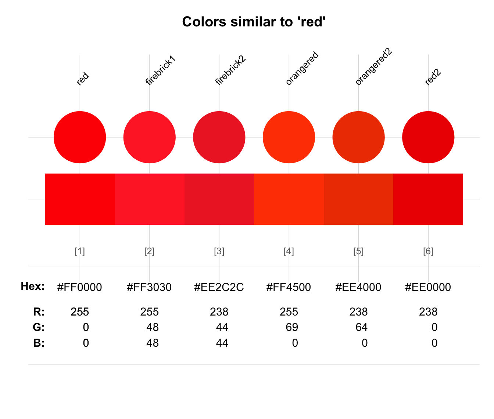
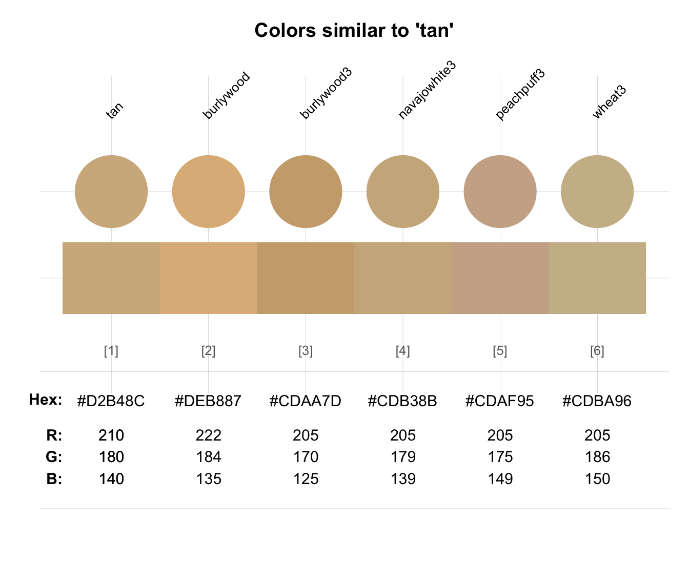

simcol finds and shows colors
from a palette of color candidates col_candidates that are similar
to some target color col_target.
Arguments
- col_target
A (required) target color.
- col_candidates
A palette of color candidates to be considered. Default:
col_candidates = colors().- tol
Numeric tolerance value(s) (either 1 or 3 numeric values, in the RGB range from 0 to 255). Values are considered in the order of the RGB value rank in
col_target. Default:tol = c(25, 50, 75).- distinct
Boolean: Return only visually distinct colors? Default:
distinct = TRUE(i.e., remove visual duplicates).- plot
Boolean: Plot the output (using
seecol)? Default:plot = TRUE.
Details
simcol returns a vector of the (named) colors or color values in
col_candidates (set to colors() of grDevices per default)
that are similar to the specified target color col_target.
If plot = TRUE, simcol also visualizes the detected colors
(by passing its result to seecol, as a side-effect).
Color similarity is defined in terms of the distance between colors' RGB values,
which must be within the numeric tolerance threshold(s) specified by tol
(with 0 <= tol <= 255).
Higher tol values correspond to more permissive similarity judgments.
If tol is a scalar, the values of all three RGB dimensions
of col_candidates must be within the corresponding values of
col_target to be judged as 'similar'.
If tol contains three values, the three RGB dimension are compared
in order of the dimensions' rank in col_target
(i.e., the primary dimension must be within tol[1], etc.).
Thus, providing three tol values allows for
more fine-grained similarity matching.
See also
seecol for plotting/seeing color palettes;
usecol for using color palettes;
newpal for defining new color palettes;
grepal for finding named colors;
shades_of to defining shades of a given color;
ac for adjusting color transparency.
Other color functions:
ac(),
demopal(),
grepal(),
newpal(),
seecol(),
shades_of(),
usecol()
Examples
# Basic uses:
simcol(col_target = "red")

#> red firebrick1 firebrick2 orangered orangered2 red2
#> "red" "firebrick1" "firebrick2" "orangered" "orangered2" "red2"
simcol("tan", tol = 15)

#> tan burlywood burlywood3 navajowhite3 peachpuff3
#> "tan" "burlywood" "burlywood3" "navajowhite3" "peachpuff3"
#> wheat3
#> "wheat3"
simcol(Seeblau, tol = c(20, 30, 40))
 #> Seeblau skyblue2 steelblue1 steelblue2
#> "#59C7EB" "skyblue2" "steelblue1" "steelblue2"
simcol("blue", col_candidates = pal_unikn_pref, tol = 120)
#> Seeblau skyblue2 steelblue1 steelblue2
#> "#59C7EB" "skyblue2" "steelblue1" "steelblue2"
simcol("blue", col_candidates = pal_unikn_pref, tol = 120)
 #> blue Karpfenblau Petrol
#> "blue" "#3E5496" "#077187"
# Fine-tuning the range of color matching:
simcol(Seeblau, tol = 30) # = simcol(Seeblau, tol = c(30, 30, 30))
#> blue Karpfenblau Petrol
#> "blue" "#3E5496" "#077187"
# Fine-tuning the range of color matching:
simcol(Seeblau, tol = 30) # = simcol(Seeblau, tol = c(30, 30, 30))
 #> Seeblau steelblue1 steelblue2 turquoise
#> "#59C7EB" "steelblue1" "steelblue2" "turquoise"
simcol(Seeblau, tol = c(20, 20, 80))
#> Seeblau steelblue1 steelblue2 turquoise
#> "#59C7EB" "steelblue1" "steelblue2" "turquoise"
simcol(Seeblau, tol = c(20, 20, 80))
 #> Seeblau lightskyblue lightskyblue2 skyblue skyblue1
#> "#59C7EB" "lightskyblue" "lightskyblue2" "skyblue" "skyblue1"
#> skyblue2 steelblue1
#> "skyblue2" "steelblue1"
# Increasing tolerance widens range:
simcol("grey", c("white", "grey", "black"), tol = 255, distinct = FALSE, plot = FALSE)
#> gray white gray black
#> "grey" "white" "grey" "black"
#> Seeblau lightskyblue lightskyblue2 skyblue skyblue1
#> "#59C7EB" "lightskyblue" "lightskyblue2" "skyblue" "skyblue1"
#> skyblue2 steelblue1
#> "skyblue2" "steelblue1"
# Increasing tolerance widens range:
simcol("grey", c("white", "grey", "black"), tol = 255, distinct = FALSE, plot = FALSE)
#> gray white gray black
#> "grey" "white" "grey" "black"